Release notes 1.1/cs
FreeCAD 1.1 byl vydán 24 března 2026, stáhněte si ho ze stránky Download. Na této stránce najdete přehled všech nových funkcí a změn.
Poznámky ke starším verzím FreeCADu najdete v seznamu funkcí.
Obecné
- Vylepšená podpora Waylandu. Žádost o začlenění #21917, Žádost o začlenění #23768 a Žádost o začlenění #23946
Uživatelské rozhraní
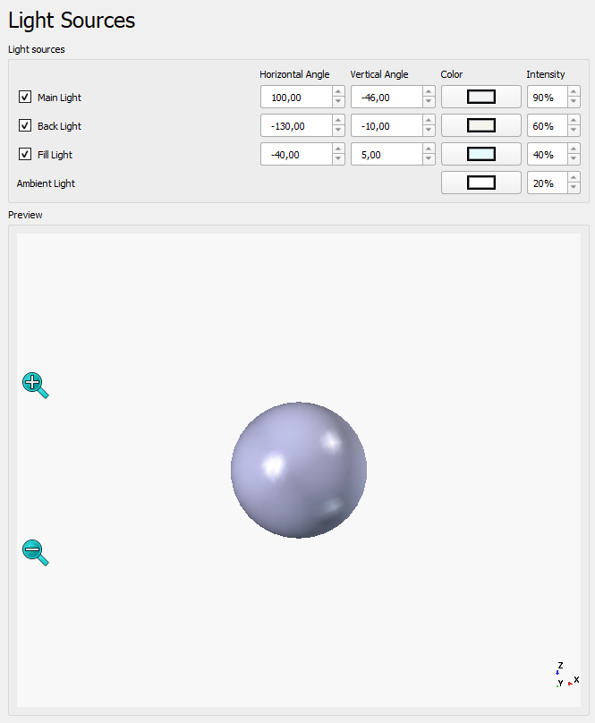 |
Bylo přidáno tříbodové osvětlení, aby se zlepšilo vykreslování 3D modelů. |
{kind=link}

|
Do |
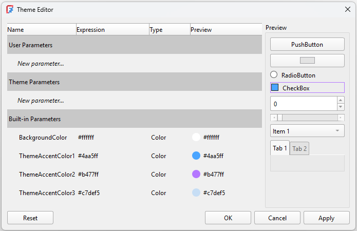 |
Byl implementován nový editor šablon a systém tokenů šablon, které umožňují lepší přizpůsobení tabulek stylů. |
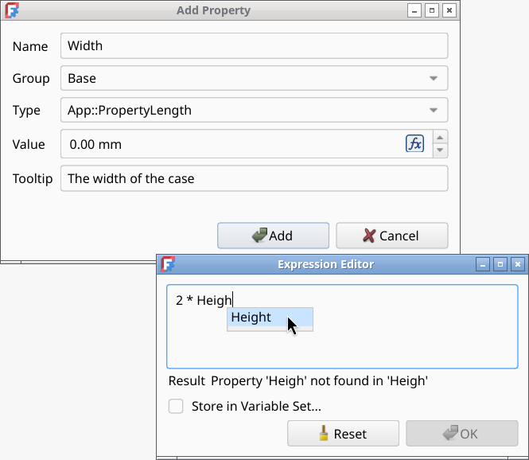 |
Ucelené a vylepšené dialogové okno „Přidat vlastnost“, které podporuje výrazy, výčty a jednotky. Vylepšený editor výrazů s lepším doplňováním pomocí klávesy Tab, chováním při změně velikosti a zadáváním pomocí VarSet. Žádost o začlenění #22719, Žádost o začlenění #23426, Žádost o začlenění #22964 a Žádost o začlenění #22944. |
{kind=link}
{kind=link}
Další vylepšení uživatelského rozhraní
- Byla přidána výchozí klávesová zkratka pro
 Předvolby. Žádost o začlenění #15536
Předvolby. Žádost o začlenění #15536 - Byla vylepšena stránka nastavení oznamovací oblasti. Žádost o začlenění #15207
- Do nástroje
 Měření byly přidány funkce automatického ukládání a výběru prvků. Žádost o začlenění #17717
Měření byly přidány funkce automatického ukládání a výběru prvků. Žádost o začlenění #17717 - Byl přidán parametr Přepnout průhlednost pro jemné doladění, který uživatelům umožňuje změnit výchozí úroveň průhlednosti nastavenou nástrojem
 Přepnout průhlednost. Žádost o začlenění #18986
Přepnout průhlednost. Žádost o začlenění #18986 - Byla přidána vlastnost Zobrazit rovinu, která slouží k zobrazení roviny, na níž je 2D objekt založen. Žádost o začlenění #18910
- Nyní je možné změnit barvu os souřadnicového systému pomocí nových nastavení v menu Upravit → Nastavení → Zobrazení → 3D zobrazení. Žádost o začlenění #16995
- Byla přidána vlastnost zobrazení Zobrazit umístění, která zobrazuje umístění jako souřadnicový systém v počátku objektu. Žádost o začlenění #19671
- Byl přidán styl navigace styl navigace SolidWorks. Žádost o začlenění #19568
- Animace Navigační krychle se postupně otáčí v závislosti na tom, jak často klikáte na plochá tlačítka. Žádost o začlenění #19719
- Byly přidány nové styly dráhy Trackball Classic a Rounded Arcball. Výchozím nastavením je nyní Rounded Arcball, který umožňuje čisté otáčení kamery při pohybu kurzoru v blízkosti okrajů obrazovky. Žádost o začlenění #20535
- Byla přidána podpora nápovědy ve stavovém řádku. Žádost o začlenění #18961
- Všechny logické vlastnosti v okně vlastností nyní používají zaškrtávací políčko namísto rozevíracího seznamu s možnostmi true/false. Žádost o začlenění #21555
- Byl přidán navigace styl navigace Siemens NX. Žádost o začlenění #21813
- Pokud se ve stromu nachází aktivní objekt, při jeho vytvoření k němu bude přidána
 skupina. Žádost o začlenění #21902
skupina. Žádost o začlenění #21902 - Příkaz
 Zarovnat k výběru používá menší úhly natočení. Žádost o začlenění #20088
Zarovnat k výběru používá menší úhly natočení. Žádost o začlenění #20088 - Příkaz Zarovnat k výběru využívá nejdelší hranu plochy k vodorovnému nebo svislému zarovnání. Žádost o začlenění #20374
- Příkaz Zarovnat podle výběru nyní zarovnává pohled kamery také podle vybraných rovinných křivek a nerovinných ploch. Žádost o začlenění #22066 a Žádost o začlenění #22365
- Všechna okna MDI (včetně např. Spreadsheet a TechDraw) lze nyní oddělit a přepnout do režimu celé obrazovky pomocí klávesových zkratek (V, U nebo F11) nebo položky menu Zobrazit → Okno dokumentu. Žádost o začlenění #22544
- Výchozí seznam pracovních prostředí je nyní kratší, protože méně používaná pracovní prostředí jsou ve výchozím nastavení deaktivována. Patří mezi ně pracovní prostředí Inspection, <none>, OpenSCAD, Robot a Test Framework. Žádost o začlenění #23034
Jádro systému a API
Jádro
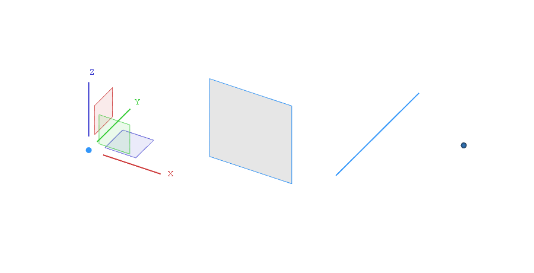 |
{kind=link}
 Pokud se animace nespustí, klikněte na obrázek. |
Nástroj |
 Pokud se animace nespustí, klikněte na obrázek. |
Byly přidány pokročilé možnosti pro zarovnání podle konkrétních os v rámci příkazu Přesunout k jinému objektu nástroje |
 Pokud se animace nespustí, klikněte na obrázek. |
Rychlé měření zobrazuje ve stavovém řádku další informace na základě vybraných prvků. Kromě délky, úhlu, plochy a poloměru nyní zobrazuje také průměr uzavřených kruhových prvků a vzdálenost os. Funguje to jak u jednoho, tak u více vybraných prvků. K dispozici je také možnost v menu, která tuto funkci deaktivuje. |
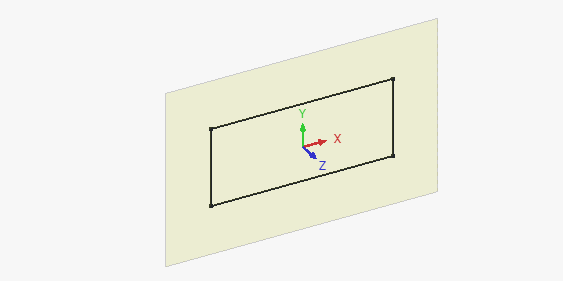 |
Je-li otevřen |
{kind=link}
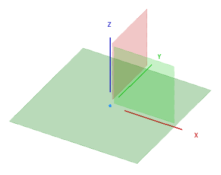 |
Počáteční plochy se nyní zvětší, když na ně najedete kurzorem. K dispozici je také nové nastavení Velikost referenčního systému, které slouží k úpravě velikosti objektů referenčních ploch. |
{kind=link}
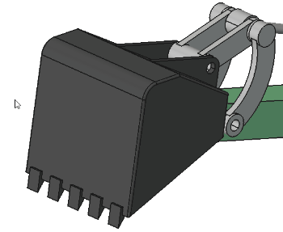 Pokud se animace nespustí, klikněte na obrázek. |
Byl přidán nástroj Zřetelnější výběr, který vychází z funkce Pick Geometry od Realthundera. Lze ho aktivovat klávesovou zkratkou G, volbou z kontextového menu nebo (v závislosti na zvoleném stylu navigace) podržením levého tlačítka myši. Umožňuje dočasnou průhlednost a zobrazuje seznam všech blízkých geometrických entit různých typů (Objekt, Stěna, Hrana, Vrchol, Ostatní), aby bylo možné vybrat skryté/vnitřní objekty při najetí myší na model ve 3D pohledu. |
{kind=link}
Další vylepšení jádra
- Do výrazů byla přidána podpora logických funkcí. Žádost o začlenění #22506
- Výchozí struktura adresářů s uživatelskými daty a konfigurací se změnila tak, že nyní obsahuje číslo verze FreeCADu. Díky tomu je aktualizace méně riskantní a umožňuje bezpečné používání starších verzí FreeCADu souběžně s novou verzí. Při spuštění je nyní k dispozici možnost převést starší konfigurace do nové struktury s čísly verzí, pokud je v systému detekována předchozí verze. Žádost o začlenění #23321
- Byla přidána možnost přejmenování dynamických vlastností. Žádost o začlenění #21444, Žádost o začlenění #21975 a Žádost o začlenění #21976.
API
Odstraněno rozhraní API pro Python
Změny v rozhraní API jazyka Python
Nové rozhraní API pro Python
- K dispozici je nová statická třída
FreeCAD.ApplicationDirectories, která poskytuje funkce související s novou verzovanou strukturou adresářů.
Start
- Úvodní stránka nyní může zobrazovat obsah dalších složek, které uživatel určí. Cesty k těmto složkám by měly být odděleny dvojitými středníky (
;;). Žádost o začlenění #19473, Žádost o začlenění #19918 a Žádost o začlenění #19948. - Sekci Příklady na úvodní stránce lze skrýt pomocí nastavení v předvolbách. Žádost o začlenění #19376 a Žádost o začlenění #19918.
- Náhledy (miniatury) dalších formátů 3D modelů (například STEP a STL) se nyní zobrazují v sekcích Nedávné soubory a Příklady na úvodní stránce, pokud je nainstalován prohlížeč F3D a je přidán do systémové proměnné PATH. Žádost o začlenění #19489
Správce rozšíření
- Aktualizátor závislostí pro Python nyní funguje správně, pokud je FreeCAD nainstalován jako balíček snap nebo jako AppImage. Žádost o začlenění #19384, Žádost o začlenění #19766 a Žádost o začlenění #19814.
- Instalace modulů Pythonu v nástroji pro aktualizaci závislostí se nyní pro lepší přehlednost zobrazuje jako absolutní cesta. Zobrazuje se také správně v závislosti na způsobu instalace FreeCADu. Žádost o začlenění #19828 a Žádost o začlenění #19816.
- Správce rozšíření je sám o sobě doplňkem a lze ho aktualizovat tak, že přejdete na jeho stránku v seznamu doplňků Správce rozšíření.
- Rozšíření nyní mohou výslovně deklarovat podporu konkrétních verzí FreeCADu a pro každou z nich je podporováno více verzí a větví.
- Závislosti v jazyce Python nyní využívají soubor pip-constraints, aby byla zajištěna instalace bez konfliktů.
Pracovní prostředí Assembly
- Byl přidán nástroj Vložit nový díl, který umožňuje snadno přidávat nové díly do sestavy. Žádost o začlenění #17922
- Byl přidán nástroj Vytvořit simulaci, který umožňuje přiřazovat pohyby kloubům a vytvářet animace.Žádost o začlenění #16414
- Příkaz
 Kusovník (BOM) nyní dokáže vypsat hodnoty zadaných vlastností. Žádost o začlenění #20732
Kusovník (BOM) nyní dokáže vypsat hodnoty zadaných vlastností. Žádost o začlenění #20732
{kind=link}
{kind=link}
Další vylepšení prostředí Assembly
- Při sestavování více dílů lze k připevnění spojů použít novou základní souřadnicovou soustavu. Žádost o začlenění #18332
Pracovní prostředí BIM
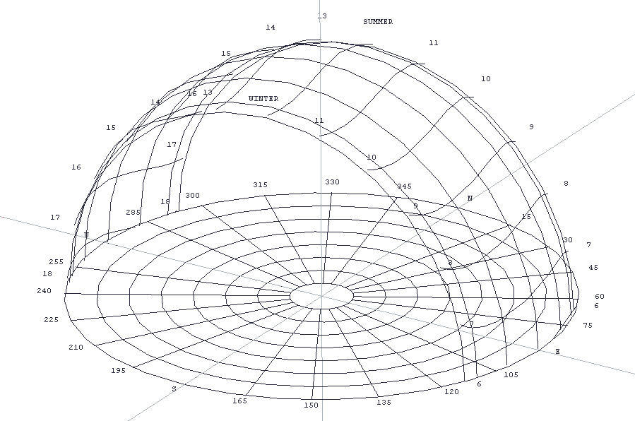 |
Interactive sun position and ray visualization were added to |
{kind=link}
Further BIM improvements
- The
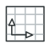
Views panel got an overhaul and now has a section for all 2D views. Pull request #15836 - The Views panel got an activate and deactivate functionality for objects in the spatial decomposition section. Pull request #15836 and Pull request #21570
- NativeIFC support for 2D objects was added to BIM, allowing to embed 2D objects (linework, texts, dimensions) inside IFC files, as well as opening such files from other BIM apps. Pull request #16629
- The
 Schedule dialog gained support for simple arrays (e.g. non-nested). This enables regular and link arrays (both either expanded or not expanded) to be processed for further calculations in the BIM Schedule report. Pull request #19219
Schedule dialog gained support for simple arrays (e.g. non-nested). This enables regular and link arrays (both either expanded or not expanded) to be processed for further calculations in the BIM Schedule report. Pull request #19219 - The Continue option is now stored separately for each Draft and BIM command. Pull request #20748
- When adding BIM views to a TechDraw page, they now adhere to the page's scale, so that they have a sensible size. Pull request #20935
- The default zoom level for new BIM projects has been changed to be more adequate to the magnitudes used for architectural models. Pull request #20271
- When creating a new
 Level, selected objects in the tree view are now included in the level. Pull request #20180
Level, selected objects in the tree view are now included in the level. Pull request #20180  Spaces can now be created from a single object (e.g. the interior faces of a wall based on a rectangle base). Pull request #20158
Spaces can now be created from a single object (e.g. the interior faces of a wall based on a rectangle base). Pull request #20158- FreeCAD standard groups can now be ignored when a model is exported to IFC. This is controlled by a preference and is the new default. Pull request #21583
- An option to preload all IfcTypes during IFC file import/open process has been added. Pull request #21450
- The
 Section Plane command received numerous fixes and usability improvements. Most notably the issue whereby rotating the section plane flipped the cut direction was fixed, and the ability to toggle the CutView from the Task panel was added. Pull request #23826
Section Plane command received numerous fixes and usability improvements. Most notably the issue whereby rotating the section plane flipped the cut direction was fixed, and the ability to toggle the CutView from the Task panel was added. Pull request #23826 - Double clicking on a BIM object that supports editing should open its task panel, instead of editing its label. Pull request #23805, Pull Request #23796 and Pull Request #24712
- The
 Remove command can now remove windows and doors from walls. Pull request #21561
Remove command can now remove windows and doors from walls. Pull request #21561 - When creating a custom window, the window's frame depth and related properties are described unambiguously to the user. Pull Request #21486
- When exporting models that contain a roof, that roof is no longer removed from the export. Pull Request #21409
- Double-clicking a Level now activates it and its working plane by default. Pull Request #21159
- The W, P shortcut was added to select the working plane. Pull Request #21157.
- Support for B-splines for structures, such as
 Slab, was added. Pull Request #21134
Slab, was added. Pull Request #21134 - Upon
 Wall creation, the wall's ÚdajeOffset property can additionally be entered. Pull Request #21042
Wall creation, the wall's ÚdajeOffset property can additionally be entered. Pull Request #21042 - The 2D View creation commands are now grouped together for improved usability. Pull Request #20941
{kind=link}
Pracovní plocha CAM
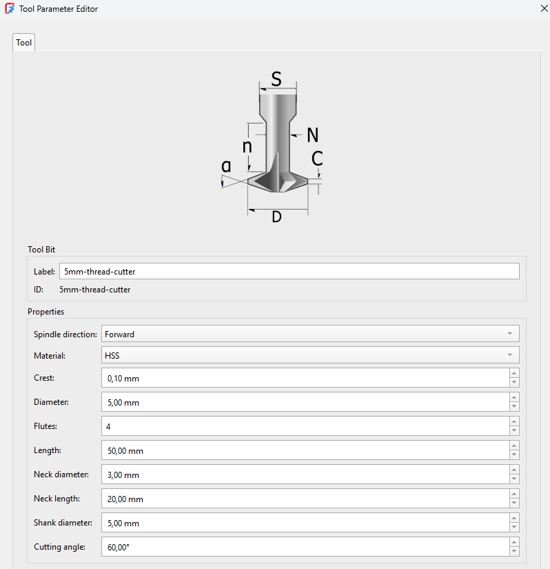 |
CAM Tool Management was replaced with Better Tool Library integration introducing a new toolbit editor and selector. |
{kind=link}
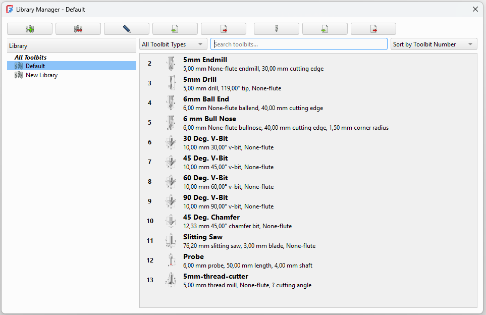 |
The Toolbit Library Editor was replaced and supports copy and paste as well as drag and drop features. |
{kind=link}
Further CAM improvements
- The
 CAM Shape experimental tool was replaced by Path from Shape with Tool Controller which is a significantly improved version of that tool based on a macro. Pull request #21108
CAM Shape experimental tool was replaced by Path from Shape with Tool Controller which is a significantly improved version of that tool based on a macro. Pull request #21108 - Adaptive roughing/overhang detection was implemented including intelligent 2.5D projection of the model and stock for all adaptive operations, one-click "adaptive roughing" of the entire model, "Z stock to leave" setting to complement the "finishing stepdown" setting and a checkbox to order cuts by depth or region. Pull request #18880
- G84/G74 tapping operations were added experimentaly. Pull request #8069 and Pull request #24148
- Multi-pass support was added for profile operations. Pull request #17326
- Support for Snapmaker, Masso and Ondsel SVG postprocessors was added. Pull request #20154, Pull request #18845 and Pull request #21743
- The
 New CAM Simulator was improved, including two additional buttons to reset the camera and decrease the speed. Pull request #21288, Pull request #21222 and more
New CAM Simulator was improved, including two additional buttons to reset the camera and decrease the speed. Pull request #21288, Pull request #21222 and more - The Array operation is now considered deprecated as it's currently also implemented as a dressup. Pull request #20321
- Support for multi-pass profile operations was implemented. Pull request #17326
- The LeadInOut functionality was improved. Pull request #22669
- UI elements were added to allow viewing and editing tool controller parameters from within the operation's task panel. Pull request #23180
Pracovní plocha Draft
- Objects with two arrows can now have different start and end arrows. The size of an object's start and end arrows can also be different. Pull request #11941
- The
 Draft Edit command can now also handle Draft Labels. Pull request #13445
Draft Edit command can now also handle Draft Labels. Pull request #13445 - Support for relative file paths has been added to
 ShapeStrings and
ShapeStrings and  hatches. Pull request #17819 and Pull request #23294
hatches. Pull request #17819 and Pull request #23294 - The handling of Links in TechDraw DraftViews was fixed. Pull request #18175 and Pull request #19296
- The extrude mode of the
 Draft Trimex command has been made link-aware. It can now handle faces belonging to Links and objects in linked containers. And the point that defines the extrusion can be co-planar with the face. Pull request #18314 and Pull request #18320
Draft Trimex command has been made link-aware. It can now handle faces belonging to Links and objects in linked containers. And the point that defines the extrusion can be co-planar with the face. Pull request #18314 and Pull request #18320 - The Move, Rotate and Scale commands have been made link-aware as well. Pull request #18795
- If a Facebinder based on connected faces is extruded, an attempt is made to close its corners. The Sew property of the object must be set to true for this. Note that the code can fail for complex shapes. Pull request #18901
 Path arrays have been enhanced with several new properties. It is now possible to reverse the array, specify a fixed spacing unit, and use spacing patterns. Pull request #19017
Path arrays have been enhanced with several new properties. It is now possible to reverse the array, specify a fixed spacing unit, and use spacing patterns. Pull request #19017- Objects in layers can now have overrrides. Pull request #19207
- The Draft AddToLayer command, to quickly put objects in the correct layer, has been added. Pull request #19427
- The TechDraw code that Draft Hatch relies on has been revised to also handle dashed lines in hatch patterns. Pull request #19458
- The Draft Downgrade and Draft Upgrade commands have been updated. Arrays can be downgraded (exploded), and new objects are put in the same container (Group, Part) as the original objects, and also receive the visual properties of the original objects. Pull request #19487 and Pull request #19685
- The
 Draft Polygon command now shows a preview (tracker) of an actual polygon, instead of a circle. Pull request #21045
Draft Polygon command now shows a preview (tracker) of an actual polygon, instead of a circle. Pull request #21045 - An Align to face checkbox has been added to the task panel of the Draft Hatch command. Pull request #21332
- An in-command shortcut D to recenter the working plane during commands has been added. Pull request #19728
- To simplify user input for single axis arrays, a linear mode option has been added to the task panel of the
 Draft OrthoArray command. Pull request #21602
Draft OrthoArray command. Pull request #21602 - Status bar hints were added for Draft Creation tools. Pull request #23244
{kind=link}
Further Draft improvements
- The Draft Fillet command now works on selected edges, instead of the first edge of selected objects. Pull request #17945 and Pull request #18150
- The Draft AutoGroup and the Draft AddToGroup commands have been improved. The menus of both commands are sorted alphabetically. In the menu of the Draft AutoGroup command layers are separated from groups, and the New layer option prompts for a name and activates the layer. The actions of both commands have been made undoable. Pull request #18172 and Pull request #19312
- The position of the Scale multiplier field in the UI was improved (Draft SetStyle, Draft AnnotationStyleEditor and Draft Preferences). Pull request #18299
- The Draft Draft2Sketch command now also applies coincident constraints between edges from different source objects. Pull request #18805
- The radius, and chamfer and delete modes of the Draft Fillet command are stored. Pull request #19067
- An edit option has been added for Draft Clones. After double-clicking them in the Tree view their scaling can be modified in a task panel. Pull request #19477
- A planar face and an edge can now be selected for the Draft SelectPlane command. Pull request #19728
- For clarity the Filled checkbox in the task panel of for example Draft Wire has been relabeled to Make face. Pull request #19738
- The texts of newly created dimensions are now oriented automatically relative to the current working plane. A fine-tuning parameter is available to disable this behavior. Pull request #20072
- Near snap no longer overrides other snaps. On-object snaps, such as Midpoint snap and Endpoint snap, within snapRange of the cursor are now detected. Pull request #20118
- In the Draft Preferences a dropdown to select the font name for texts, dimensions and labels has been introduced. Previously the name had to be entered manually. Pull request #20400
- The Continue option is now stored separately for each Draft and BIM command. For the Draft Dimension command the old Continue option has been re-labeled to Chained mode for clarity, and a new Continue option has been added. Pull request #20748
- The Draft ShapeString command has seen several improvements. The font file is no longer a preference, instead the last selected file is stored. For the initial value of the font file an attempt is made to get a suitable file from the OS. This is primarily to help users who are not aware of font file locations. The last entered text and height are also stored. A Global option has been added to task panel. By unchecking that checkbox, coordinates can be specified in the working plane coordinate system. Finally, TrueType Collection font files (.ttc) can now also be selected, but only the first font in such a file can be used. Pull request #21004, Pull request #21054 and Pull request #21124
- The base object for a Draft Wire, Draft BSpline and Draft BezCurve has been changed to the Part::FeaturePython object. Pull request #21636
- Intersection snap now also detects intersections between faces and edges. Pull request #23352
- The Working plane orientation option has been removed from the Draft Scale command as it did not work properly. Pull request #23716
Pracovní plocha FEM
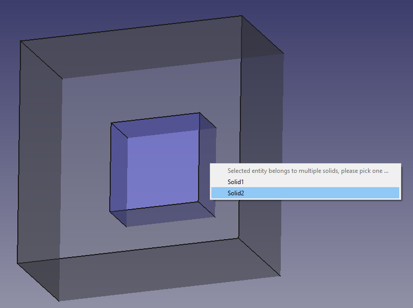 |
A popup menu was added to enable the selection of a proper solid if the selected face of CompSolid belongs to two solids. This makes it easier to select inner solids e.g. to apply materials to them. |
{kind=link}
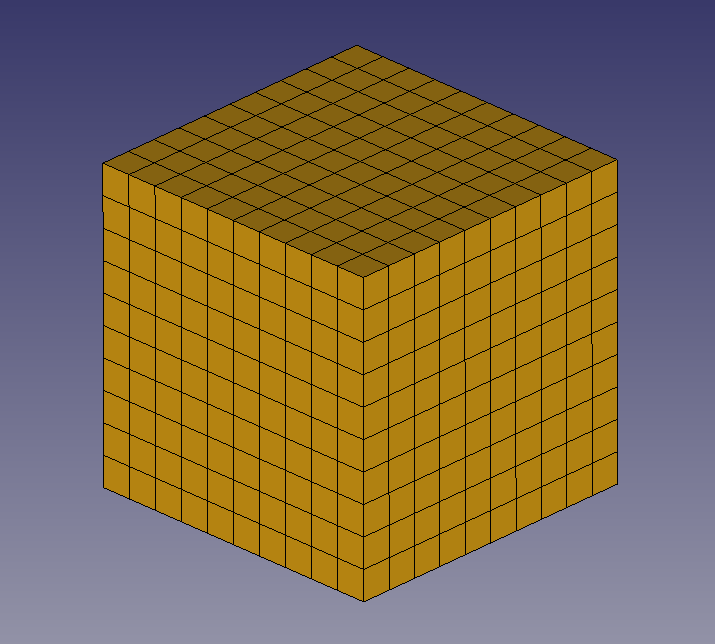 |
ZRefine property was added to |
{kind=link}
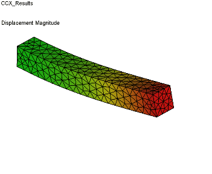 Click on the image if the animation does not start. |
{kind=link}
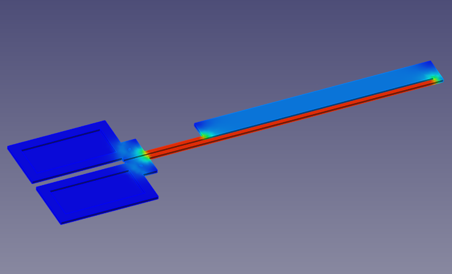 |
Support for Elmer's static current conduction solver was added. Joule heating may also be calculated with it. |
{kind=link}
{kind=link}
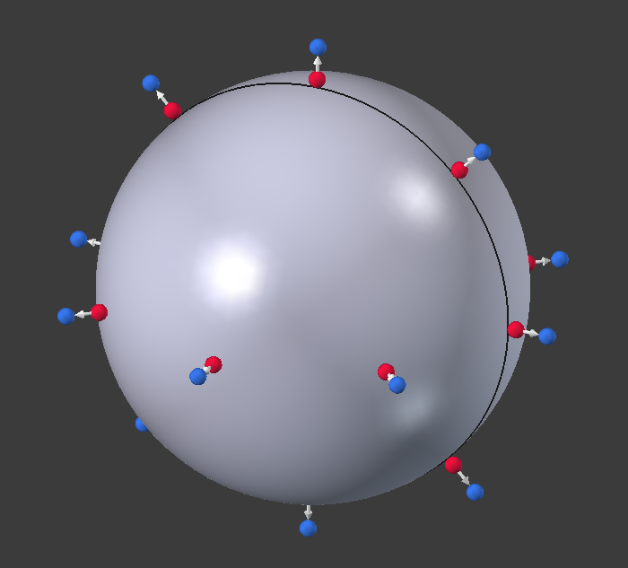 |
{kind=link}
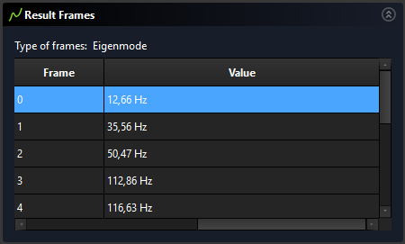 |
The |
{kind=link}
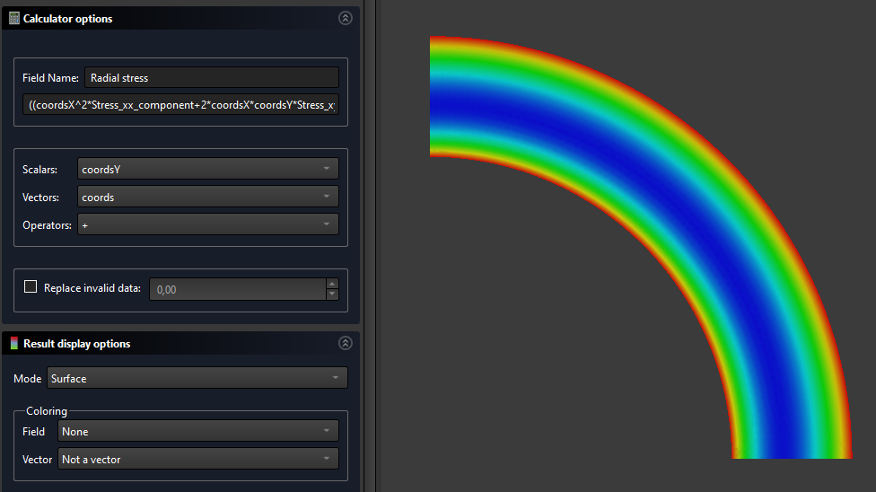 |
Calculator filter was added to allow the creation of custom fields by defining mathematical expression operating on the existing fields. |
{kind=link}
{kind=link}
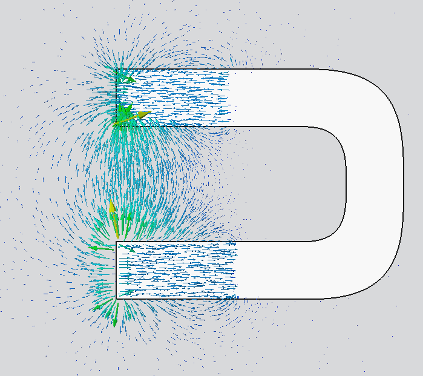 |
Glyph filter was added along with a framework making it possible to develop more Python VTK filters. |
{kind=link}
{kind=link}
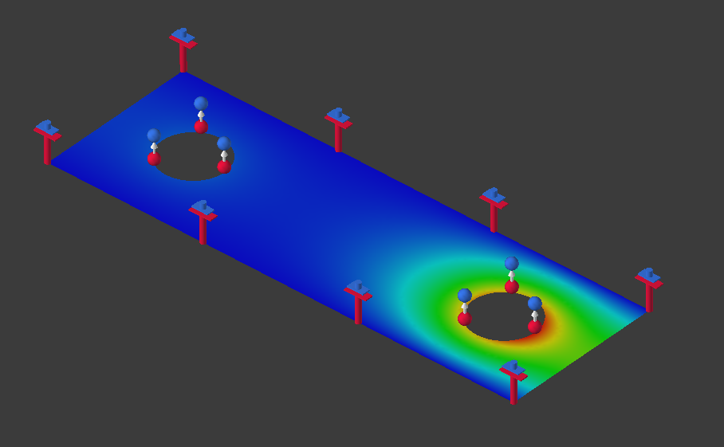 |
Electrostatic analyses (also 2D ones) are now supported with the newly refactored |
{kind=link}
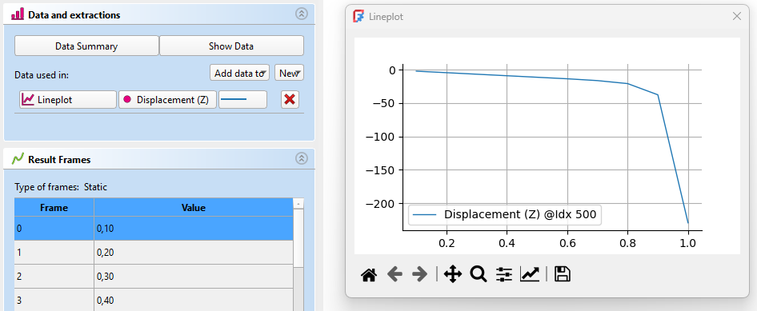 |
Data extraction toolset was added to result pipelines. |
{kind=link}

|
Pressure and heat flux loads as well as tie constraint and contact can now be applied to edges in 2D analyses with CalculiX. Similarly, body heat source and centrifugal force loads can be applied to faces of 2D models. |
Further FEM improvements
- Log verbosity and number of threads used for meshing can now be set for
 Gmsh and
Gmsh and  Netgen in the Preferences. Pull request #17699 and Pull request #18608
Netgen in the Preferences. Pull request #17699 and Pull request #18608 - The ÚdajeSecond Order Linear property and support for local refinement, previously only available for Gmsh, are now also available for the new Netgen implementation. Pull request #17170
- Box and elliptical beam section types were added to FEM ElementGeometry1D. Pull request #15843
- The Purge results tool now deletes all the results objects, not just the ones native to CalculiX. Pull request #18328
- Tie constraint can now be applied also to shell faces. Pull request #18325
- Output format (binary or ASCII) and saving of geometry IDs can now be set for Elmer, also in Preferences. Pull request #17972
- A smoothing option was added to the Contours filter. Pull request #18088
- The BucklingAccuracy parameter was added to
 CalculiX solver - it might be necessary to capture the first eigenvalue in some linear buckling analyses. Pull request #18790
CalculiX solver - it might be necessary to capture the first eigenvalue in some linear buckling analyses. Pull request #18790 - Now all FEM objects for which suppressing makes sense can be suppressed. Previously only constraints were suppressible. Pull request #18636
- Contact forces are now printed to ccx_dat_file in CalculiX analyses. Pull request #18840
- The MaterialReinforced tool now uses the
 new material editor. Pull request #18893
new material editor. Pull request #18893 - The
 Electrostatic potential boundary condition was extended to also support Neumann-type boundary condition and prescribe electric flux density. It now has a symbol too. Pull request #18514 and Pull request #19011
Electrostatic potential boundary condition was extended to also support Neumann-type boundary condition and prescribe electric flux density. It now has a symbol too. Pull request #18514 and Pull request #19011 - Thermal expansion reference temperature can now be defined for
 solid material in thermomechanical analyses with CalculiX. Pull request #19285
solid material in thermomechanical analyses with CalculiX. Pull request #19285 - The Fem.frdToVTK Python function was added allowing conversion of CalculiX's frd results files to VTK format used by ParaView. Pull request #19426
- The Current density boundary condition was improved. It now has two modes (Custom and Normal) and a symbol for the Normal mode. Pull request #19930
- Two new
 FEM examples were added - one for the newly implemented Static current equation (Joule heating) and one for Rigid body constraint. Pull request #20007 and Pull request #20011
FEM examples were added - one for the newly implemented Static current equation (Joule heating) and one for Rigid body constraint. Pull request #20007 and Pull request #20011 - The
 Heat flux load task panel was improved - radio buttons used to choose the heat flux type were replaced with a combo box. Pull request #20059
Heat flux load task panel was improved - radio buttons used to choose the heat flux type were replaced with a combo box. Pull request #20059 - The Magnetization boundary condition task panel was improved. Pull request #20055
- Selection mode was added to Geometry reference selector in the task panels of Elmer equations. Pull request #20053
- The renameArrays Python function was added to rename selected
 results pipeline fields. Pull request #20411
results pipeline fields. Pull request #20411 - A CalculiX-related preference named Result object was added. If its checkbox Pipeline only is enabled, a newly refactored CalculiX solver object is added to the Analysis container when using the Solver CalculiX option. It has an updated task panel, doesn't generate
 CCX_Results objects (only the results pipeline object is created) and will be further developed. Pull request #20609
CCX_Results objects (only the results pipeline object is created) and will be further developed. Pull request #20609 - The Offset property was added to
 Shell Plate Thickness, making it possible to offset the expanded shell from the actual mesh. Pull request #22385
Shell Plate Thickness, making it possible to offset the expanded shell from the actual mesh. Pull request #22385 - Support for thermal contact with CalculiX was added via Enable Thermal Contact and Thermal Contact Conductance properties used to specify gap conductance. Pull request #22121
- Support for hard and tied contact with CalculiX was added. Pull request #22513 and Pull request #23327
- Support for cavity radiation with CalculiX was added. Pull request #22593
- Support for amplitudes (time variation) for most mechanical and thermal boundary conditions and loads with CalculiX was added. There are new properties: Enable Amplitude and Amplitude Values. Pull request #22851
 Initial temperature can now be applied to a selected region (via the References property) in CalculiX analyses. Pull request #22864
Initial temperature can now be applied to a selected region (via the References property) in CalculiX analyses. Pull request #22864- The Glue property was added to the Netgen mesher. When enabled, a continuous mesh is created (this property is equivalent to Gmsh's Coherence Mesh). Pull request #23074
- Default Priority of Elmer equations now starts with 255 and decreases with each added equation. This way, the equations are solved in the order they were added to the tree. Pull request #22999
- CalculiX's membrane and truss elements are now supported and replace shell and beam elements respectively when the new ExcludeBendingStiffness property of the CalculiX solver is enabled. Pull request #22912 and Pull request #23224
- Displacements of rigid body reference point are now printed to ccx_dat_file. Pull request #23199
- Initial temperature can now be also used to prescribe temperature field in a static analysis step (with optional amplitude). Pull request #23277 and Pull request #23530
- Netgen can now be installed in the standard way mentioned on its download page and it is only necessary to point FreeCAD to the proper Python executable in the preferences (by default the Python executable specified in general Python preferences is used). Pull request #23613
- Some preferences related to mesh export now have better defaults. Namely, groups of nodes are enabled for the Gmsh mesher and export to INP files includes FEM elements only and groups by default. Pull request #23553
- Properties of the CalculiX solver are now grouped and time incrementation properties are more user-friendly (improved names, better defaults, easy switch between automatic and direct incrementation as well as no need to enable additional property to set non-default incrementation). Pull request #23494
- There is a new Pastix Mixed Precision property of the CalculiX solver. It's disabled by default so that mixed precision is not used for the PaStiX matrix solver to avoid issues with incorrect results of some analyses. Pull request #23539
- The
 Elmer solver's object and task panel were reworked similar to what was done before for CalculiX. It now works with the new implementation of Netgen. Moreover, ParaView PVD files can now be imported. Pull request #24912
Elmer solver's object and task panel were reworked similar to what was done before for CalculiX. It now works with the new implementation of Netgen. Moreover, ParaView PVD files can now be imported. Pull request #24912 - Three new FEM examples were added - one for the newly implemented electrostatics with the refactored CalculiX solver, one for the newly implemented pressure loads on edges of 2D models and one for the cyclic symmetry introduced in FreeCAD 1.0. Pull request #25117, Pull request #25191 and Pull request #25268
{kind=link}
{kind=link}
{kind=link}
{kind=link}
{kind=link}
{kind=link}
{kind=link}
{kind=link}
{kind=link}
{kind=link}
Pracovní plocha Material
- Materials can now be stored in external datastores. This feature is experimental and has to be activated explicitly when compiling the source code. It is not available in the standard FreeCAD builds. Pull request #21047
Further Material improvements
- Several new materials with physical properties were added to the material database:
- Polycarbonate Pull request #19432
- PMMA Pull request #24006
- Homopolymer and copolymer POM Pull request #23820
- PEEK Pull request #23779
- Aluminum 7075-T6 Pull request #23976
- Updated Aluminum 6061-T6 Pull request #23977
Pracovní plocha Part
Further Part improvements
- The Set Tolerance tool was added to allow the creation of parametric copies of the selected objects with all contained tolerances set to at least a certain minimum value. Moreover, the
 Check geometry tool now includes output about tolerances in the Shape Content tab. Pull request #17214
Check geometry tool now includes output about tolerances in the Shape Content tab. Pull request #17214 - The Check geometry tool now also has results entries for valid shapes, shows skipped objects and generates reports in the report view. Pull request #17631
 Loft and
Loft and  Sweep now create solids by default. Pull request #22098
Sweep now create solids by default. Pull request #22098- The redundant Part Import and Part Export tools were removed from the menu. Pull request #22116
{kind=link}
{kind=link}
{kind=link}
Pracovní plocha Part Design
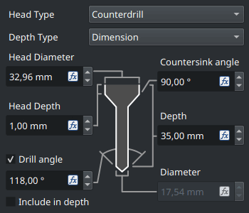 Pokud se animace nespustí, klikněte na obrázek. |
Byl přepracován panel nástroje Žádost o začlenění #19052 a Žádost o začlenění #19167 |
{kind=link}
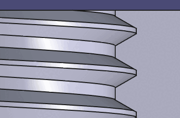 Pokud se animace nespustí, klikněte na obrázek. |
Do nástroje Otvor byla přidána podpora zúžení modelu a další profily závitů: |
{kind=link}
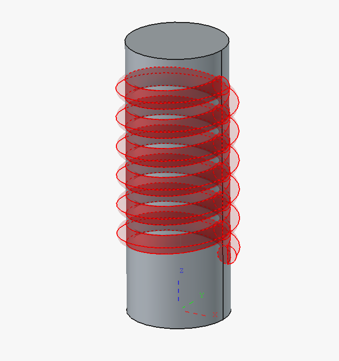 |
Byly přidány průhledné náhledy pro aditivní a subtraktivní prvky v prostředí Part Design. Lze je dočasně deaktivovat pomocí zaškrtávacích políček na panelu úloh nebo nastavit jako výchozí volbu v Nastavení. K dispozici je také volitelné zvýraznění náčrtu použitého jako profil pro operaci v prostředí Part Design. |
{kind=link}
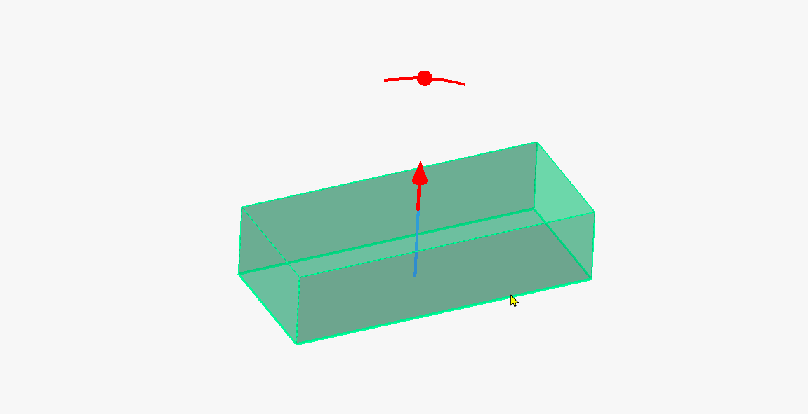 Pokud se animace nespustí, klikněte na obrázek. |
V rámci projektu Google Summer of Code byly do funkcí pracovního prostředí Part Design přidány interaktivní ovládací prvky pro přetahování. Ty umožňují upravovat hodnoty prvků přetahováním ve 3D pohledu. |
{kind=link}
Další vylepšení pracovního prostředí Part Design
- Funkce počátku v těle prostředí Part Design využívá nové základní referenční roviny. Vzhled byl změněn a roviny se při vytváření nového náčrtu zvětšují. Jelikož orientace byla ve starších verzích FreeCADu nesprávná, je třeba soubory vytvořené v těchto verzích při otevření převést. Může to poškodit soubory, které odkazují na referenční body, a převedené nebo nové soubory vytvořené ve verzi 1.1 and above budou ve verzi 1.0 and below poškozené. Žádost o začlenění #18126
- Příkaz
 Přepnout zmrazení je nyní k dispozici v prostředí Part Design. Žádost o začlenění #18373
Přepnout zmrazení je nyní k dispozici v prostředí Part Design. Žádost o začlenění #18373 - Byl vylepšen výkon modelovaných vláken vytvořených pomocí nástroje
 Otvor. Žádost o začlenění #15744
Otvor. Žádost o začlenění #15744 - Počáteční úhel pro kuželové závity v nástroji Otvor se nyní automaticky nastavuje na hodnotu podle norem ISO 7-1 a ASME B1.20.1. Žádost o začlenění #15744
- Nástroj Otvor nyní umožňuje vytvářet otvory nejen na základě kružnic, ale také na základě bodů a oblouků v náčrtu. Žádost o začlenění #20583
- Funkce Přepnout na úkol, která dříve patřila mezi parametry jemného ladění, je nyní dostupná v editoru předvoleb. Slouží k zapnutí a vypnutí automatického přepnutí na panel úloh při aktivaci pracovního prostředí Part Design. Žádost o začlenění #22136
- Panel úloh nástroje
 Deska byl vylepšen a nyní nabízí více možností pro režim Oboustranný. Žádost o začlenění #21794
Deska byl vylepšen a nyní nabízí více možností pro režim Oboustranný. Žádost o začlenění #21794 - Možnost povolit složení (více těles) u Těla je nyní ve výchozím nastavení zapnutá a již není považována za experimentální funkci. Žádost o začlenění #23003
- Nástroje pro transformaci nyní umožňují nastavit různé rozestupy. Žádost o začlenění #22389
Pracovní prostředí Sketcher
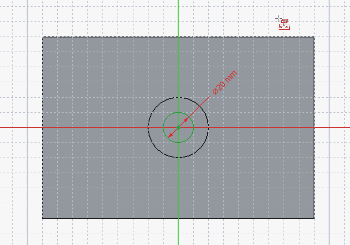 Pokud se animace nespustí, klikněte na obrázek. |
{kind=link}
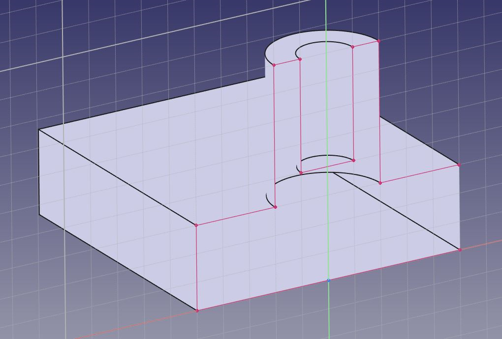 |
Byl přidán nástroj |
{kind=link}
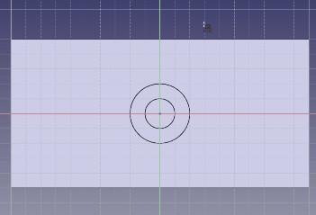 Pokud se animace nespustí, klikněte na obrázek. |
{kind=link}
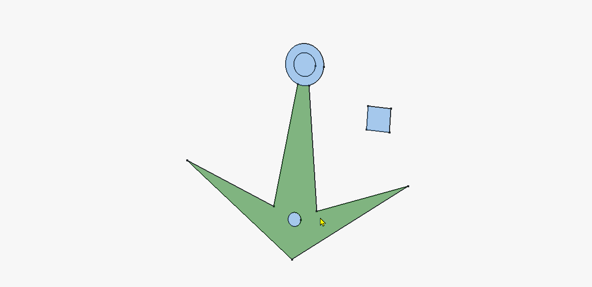 Pokud se animace nespustí, klikněte na obrázek. |
Vlastnost Vytvořit vnitřní plochy náčrtů je nyní plně funkční. Je-li zapnutá, zobrazuje plochy uzavřených obrysů a umožňuje je vybrat pro operace v prostředí Part Design. Toto nastavení je zatím ve fázi testování, ale umožňuje v prostředí Part Design pracovat s Hlavním náčrtem. |
{kind=link}
Další vylepšení pracovního prostředí Sketcher
- Nyní je možné přímo použít externí geometrii jako vstup pro nástroje, jako jsou odsazení nebo transformace (pole), a to jak pro externí konstrukci, tak pro definování geometrie. Žádost o začlenění #17615
- Externí geometrie (promítnutá nebo protínající) je nyní ve výchozím nastavení skutečnou (definující) geometrií (kterou není nutné trasovat, jako tomu bylo ve verzi 1.0 a starších). Lze ji přepnout na konstrukční geometrii stejně jako jakoukoli jinou geometrii. Žádost o začlenění #17736
- Osy prostředí Sketcheru se nyní zobrazují jako nekonečné. Žádost o začlenění #17312
- Náčrtky jsou nyní v dialogovém okně
 Připojit náčrt seřazeny abecedně. Žádost o začlenění #16518
Připojit náčrt seřazeny abecedně. Žádost o začlenění #16518 - Byla přidána funkce hromadného přetahování, která umožňuje přetahovat všechny vybrané geometrické objekty. Žádost o začlenění #18273
- K dispozici je nové nastavení, které, pokud je zaškrtnuto, zajistí, že vytváření externí geometrie nebude závislé na aktuálním režimu konstrukce – v takovém případě se vždy vytvoří jako referenční geometrie. Žádost o začlenění #18697
- Byla přidána předvolba, která umožňuje volitelné seskupování nástrojů
 Čára a
Čára a  Lomená čára. Žádost o začlenění #20165
Lomená čára. Žádost o začlenění #20165 - Při výběru vazby nebo geometrického prvku v náčrtu se nyní seznam v panelu Úkoly automaticky posune na tento objekt. Žádost o začlenění #18859 a Žádost o začlenění #20866
- Byly přidány nápovědy na stavovém řádku pro nástroje Sketcheru určené k vytváření geometrie, k vytváření vazeb, úpravám a transformacím. Žádost o začlenění #21632, Žádost o začlenění #21751, Žádost o začlenění #21806 a Žádost o začlenění #21840
- Náčrtky se nyní automaticky přizpůsobují po zadání prvního rozměru, aby nedošlo k narušení tvaru v případě, že je první rozměr výrazně větší nebo menší než aktuální velikost geometrie. Žádost o začlenění #21084
- Při vytváření geometrie se pohyb myši ignoruje, pokud je zadána hodnota v parametrech zobrazení (OVP). Klávesou Tab lze přepínat mezi vstupními poli OVP a klávesou Enter se zadání potvrdí. Vymazáním hodnoty ve vstupním poli OVP se pohyb myši pro kótování opět aktivuje. Žádost o začlenění #20925
- Zobrazení geometrických linií má nyní přednost před vazbami, takže kótovací čáry nepřekrývají geometrii. Žádost o začlenění #21982
- Nyní lze vybrat všechny části rozměrových vazeb, nejen popisky. Žádost o začlenění #21920
- Nyní je možné pomocí klávesové zkratky Ctrl+A (nebo volby Vybrat vše v menu Úpravy) vybrat veškerou geometrii v rámci náčrtu. Žádost o začlenění #23289
- Při výběru pole zleva doprava se nyní používá jiná barva než při výběru zprava doleva, aby se odlišilo jejich chování. Žádost o začlenění #23261
- Je k dispozici nové nastavení velikosti symbolů pro vazby. Žádost o začlenění #23366
Pracovní prostředí Spreadsheet
- Byly přidány výchozí klávesové zkratky pro
 Tučný text,
Tučný text,  Kurzívní text a
Kurzívní text a  Podtržený text. Žádost o začlenění #15556
Podtržený text. Žádost o začlenění #15556 - Poklepáním na oddělovač v záhlaví se nyní velikost sloupce přizpůsobí obsahu. Žádost o začlenění #16296
- Do tabulky byla přidána funkce Zoom. Žádost o začlenění #16130
- Do položek kontextového menu byly přidány ikony. Žádost o začlenění #22773
Pracovní plocha Surface
- A task panel was added for the Blend Curve tool. Pull request #21825
{kind=link}
Pracovní plocha TechDraw
- The Insert Area Annotation tool now properly accounts for holes in faces. Pull request #17740
- Shape validation is now available and can be enabled in Preferences. Pull request #18282
- Scaling of SVG symbols has been fixed. Pull request #18757
- New r format specifier was added. It rounds the dimension value to the step specified as decimal before r. For example, %0.5r (or just %.5r) rounds to 0.5. Pull request #19393
- Snapping of detail view highlights to the closest vertex in the TaskDialog drag highlight process was added. Pull request #22036
- Instead of toggling view frames, they are now shown and hidden automatically when hovering the cursor over the view. Pull request #22869
- The cosmetic circle commands were renamed and grouped for clarity. Pull request #22945
- The deprecated
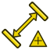
LandmarkDimension and LinkDimension tools were removed. Pull request #21483
LinkDimension tools were removed. Pull request #21483 - Number of decimals and reference dimension options were added to the
 dimension task panel. Pull request #23501
dimension task panel. Pull request #23501
{kind=link}
{kind=link}
Import a Export
- Importér souborů DXF prošel zásadní úpravou na úrovni implementace i uživatelského rozhraní, aby bylo možné zajistit předvídatelnější a konzistentnější uživatelské prostředí. Žádost o začlenění #22251
- Importér DXF nyní lépe podporuje prvky BLOCK a INSERT v souborech DXF. Žádost o začlenění #22045
- Importér DXF nyní po dokončení importu zobrazuje statistiky importu. Žádost o začlenění #21985
- Bylo opraveno zarovnání náčrtků při exportu do formátu SVG a při exportu do staršího formátu DXF. Žádost o začlenění #19765